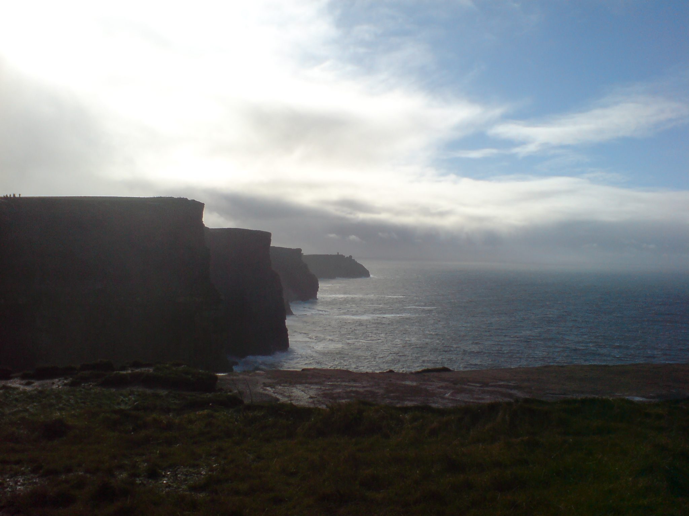

Meus lugares favoritos para ver na Irlanda
Os Penhascos de Moher
Os Penhascos de Moher estão localizados no Condado de Clare, de onde eu sou. Olha como eles são legais!
Ilha Achill
Esta é uma grande ilha na costa do Condado de Mayo. Tem uma paisagem selvagem e bonita de montanhas, pântanos e penhascos.